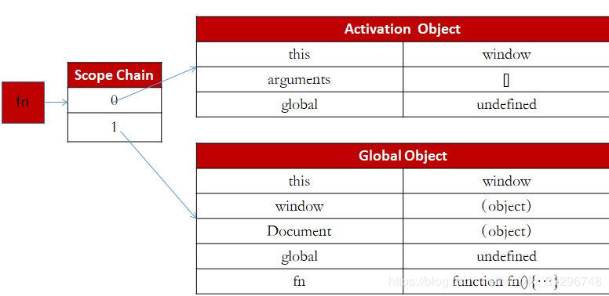

Javascript-js闭包详解
时间：2020-3-7
摘要：JavaScript闭包是学习js语言中的重点也是难点。在涉及js的项目中，很多的错误都是由于在不经意间触发了闭包而导致的。本篇文章将从js的底层逻辑出发，解释什么是js闭包、js闭包的应用、以及如何解决js闭包的带来的问题。
一、Js中的作用域
首先，在接触闭包之前，我们必须先了解js中变量的作用域。我们先记住以下三条规律，然后再从原理上阐述它们。这三条规律分别是：
1) 函数里面可以访问外面的的变量
2) 函数外面不可以访问函数里面的变量
3) 彼此并列独立的函数也不可以访问
举个例子:
var out = 1;
function1 = function(){
var inner1 = 2;
var innerFunction = function(){
console.log(out);
console.log(inner1);
}
console.log(out);
innerFunction();
}
function1(); //输出1，1， 2.
//第一个1是函数里面可以访问外面的的变量out，
//第二个1是函数里面的内部函数可以访问外面的的变量out数，
//第三个2是内部函数里面访问外部函数的变量inner1.
//这三个输出都证明着第一句话:函数里面可以访问外面的的变量
console.log(inner1) //报错，inner1没定义
//这证明函数外面不可以访问函数里面的变量
function2 = function(){
var inner2 = 3;
console.log(inner1);
}
function2();//报错，inner1没定义
//这证明彼此并列独立的函数也不可以访问
那么，从原理上如何阐述这三条规律呢？阐述这些规律之前，我们得明白什么是js的预编译。
一个js文件运行有三部曲：1）语法分析；2）预编译；3）解释执行；
1) 语法分析：浏览器在拿到js文件后，会先从头到尾扫一遍看看有没有什么特别明显的错误。比如：变量未定义等。如果有明显的语法错误，程序就会报错，不会运行；
2) 预编译：在第一步通过之后，会进入预编译的环节。预编译分为两个环节：
总体编译，步骤如下：
第一步：创建GO（全局对象）
第二步：找变量声明，将变量名作为GO的属性名，值为undefined
第三步：在函数体里面找函数声明，值赋予函数体；
函数编译，步骤如下：
第一步：创建AO（Activation Object），执行期上下文
第二步：找形参和变量声明，将变量和参数名作为AO的属性名，值为undefined
第三步：将实参值与形参统一
第四步：在函数体里面找函数声明，值赋予函数体；
下面，我们以一个例子来详细的阐述一下上述步骤与概念：
global = 100; function fn(){ console.log(global);//undefined global = 200; console.log(global);//200 var global = 300; } fn(); var global;
这段代码两个console.log的输出分别为undefined、200。是不是与你的答案有所出入呢？下面我们来分析一下如此输出的原因。按照上述步骤，我们首先进行总体编译，创建一个GO，它的形式如下：
我们不用管这里面的this、window、document是什么，我们只要知道它GO初始化之后就包含这三个属性就OK。然后我们进行总体编译的第二步，找到变量声明，这里只声明了global，那么我们将其作为属性放入GO中，值为undefined。然后进行第三步，找到函数声明，这里只声明了一个函数fn，同样我们将其作为属性放入GO中，它的值为函数体。总体编译完后的GO如下：
其实，在进行完总体的编译之后，程序就会开始解释执行。首先执行代码第一行，将100赋值给global，这样，GO中的global的值由undefined变为100，然后函数的声明在编译的时候已经看过了，所以直接跳过，来到函数fn执行的代码fn（）。在执行函数前，就需要进行函数的编译的四个步骤。首先，创建AO。AO初始化的形式如下：
然后进行第二步-找形参和变量声明。这个函数没有形参，有一个变量声明global，那么我们将其作为属性放入AO中，值为undefined。然后进行第三步，找到函数声明。这里无函数声明，所以不用进行第四步。进行完函数编译之后的AO如下：
此时，fn函数能索引到的变量如下：
中间那个索引我们称为作用域链。也就是说，fn能看到的作用域包括GO和其自身的AO。有了这些，浏览器便开始执行函数，第一行代码console.log(global)，那么浏览器按照作用域链会先去索引其自身的AO。发现global后便停止索引（如果没有发现，会去索引GO，若是再没发现。就会报错），所以输出undefined。然后给global赋值200。浏览器按照作用域链会先去索引其自身的AO，发现global后便给它的值改为200。然后就不会去找GO了，所以GO中的global的值依旧为undefined。所以此时再输出global的话，为200。
那么讲完这些之后，我们也就能明白最开始举的那个例子为什么会这么输出了。首先，进行整体编译后，GO如下：
然后给out赋值为1.然后执行function1前，对function1进行编译，编译后，其作用域链如下：
运行函数代码第一行，将inner1赋值为2，然后输出out。此时，function1的AO中索引不到out，那么就进入GO中寻找，发现out，输出其值，为1.然后运行innerfunction。此时它也要创建它的AO。创建后，它的作用域链如下：
同样，索引自身AO中的out，没找到索引Function1的AO，没找到再索引GO，找到out输出为1.找inner1的过程同样如此。输出为2.运行完Function1后，执行console.log(inner1) 。此时，只能在GO中寻找，所以找不到inner1，报错。我们程序正常的来到了function2的执行，同样，function也会编译，编译完之后，其作用域链如下：
同样的方式，先索引inner2，将其值赋为3.然后执行第二句时需要索引inner1，由于其作用域链拿不到function1的AO，所索引不到inner1，所以会报错。
好了，有了上述的知识，我们再来回顾一下最开始所说的关于作用域的三个规律:
1) 函数里面可以访问外面的的变量
2) 函数外面不可以访问函数里面的变量
3) 彼此并列独立的函数也不可以访问
用预编译的逻辑来解释就是：
1) 函数里面可以拿到其外层函数的AO与GO，所以它能索引到外面的变量，所以函数里面可以访问外面的的变量
2) 函数外面拿不到函数的AO，所以它索引不到函数里面的变量，所以函数外面不可以访问函数里面的变量
3) 显然，并列的函数拿不到彼此的AO，所以彼此并列独立的函数也不可以访问
掌握了上述知识，那么就很容易理解下面所说的闭包了。
二、闭包被触发的情况与原因分析
我们看一下下面一种情况：
function a(){
function b(){
var bbb = 234;
console.log(aaa);
}
var aaa = 123;
return b;
}
var glob = 100;
var demo = a();
demo（）
这个函数输出为123。怎么会这样呢？按照常理来讲函数外面是访问不到函数里面的变量aaa的呀？它居然不报错而输出了123。这其实就是js闭包造成的。在这个例子中，将内部函数b返回到了外部，这就触发了闭包。
闭包：内部的函数保存到外部，此时就会形成闭包；闭包会导致原有作用域链不释放，造成内存被占用
怎么理解这句话呢？我们来看看在执行demo（）前一刻，a的作用域链与b的作用域链：
1) a的作用域链：
2) b的作用域链：
我们再来看demo（）语句的前一句var demo = a(); 这一句是执行a函数然后将返回值赋值给demo。这个语句结束之后，会将a的作用域链销毁。也就是a的作用域链的图中的两条连线断开。但是，由于b被保存出来赋值给了demo。那么demo也就拿到了b的作用域链。如b的作用链所示，它还是能够指向a的AO。现在b的作用域链随着赋值操作给了demo，所以也就是说之前浏览销毁a的作用域链的操作完全没有用。我们通过demo依旧能够访问到a的AO。自然也就能索引到其中的变量aaa。所以这一段代码并不会报错而会输出123。以上就是闭包的实例。
总结一下：闭包就是由于内部函数保存到外部导致的内存泄露的问题。
三、闭包的应用
闭包有着很多应用：
1）实现公用变量：
eg：实现累加器
function add（）{
var count = 0；
function demo（）{
count++；
console.log(count);
}
return demo;
}
var counter = add();
counter();
counter();
2）可以作为缓存：
function test（）{
var num = 100；
function a（）{
num++;
console.log(num);
}
function a（）{
num--
console.log(num);
}
return [a,b]
}
var myArr = test()
myaArr[0]()
myaArr[1]()
输出：101 100
3）可以实现封装，属性私有化
4）模块化开发，防止污染全局变量
四、如何解决闭包带来的问题
我们看下面一个例子：
function test（）{
var arr = [];
for(var i = 0; i < 10; i++){
arr[i] = function(){
console.log(i);
}
}
return arr;
}
var myArr = test();
for(var j = 0; j<10;j++){
myArr[j]();
}
输出：10 10 10 10 10 10 10 10 10 10
本来，我们是想输出0 1 2 3 4 5 6 7 8 9。但是由于闭包的的原因，导致最后myArr中的每一个函数中作用域链所指向同一个test的AO。而test执行完之后，i变为10，所以最后执行myArr时，它们去索引i的时候拿到的都是10。
解决办法：
function test（）{
var arr = [];
for(var i = 0; i < 10; i++){
（function(j){
arr[j] = console.log(j);
}（i））
}
return arr;
}
var myArr = test();
for(var j = 0; j<10;j++){
myArr[j]();
}
输出：0 1 2 3 4 5 6 7 8 9
运用立即执行函数的原理。